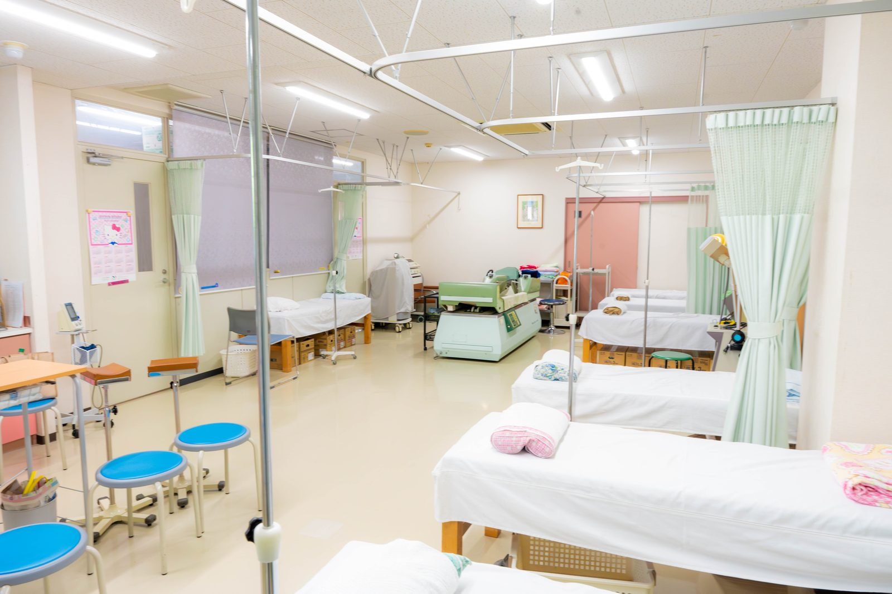

暑い日にめまいや吐き気がしました。熱中症でしょうか？どう対処すればいいですか？
A. 回答暑い環境で過ごしたあとのめまい・立ちくらみ・吐き気・頭痛・だるさは、熱中症の初期にみられることがある症状とされています。熱中症は、高温多湿な環境で体温の調節がうまく働かなくなり、体に熱がこもった状態を指します。まず行っていただきたいのは、涼しい場所へ移動し、衣服をゆるめ、体を冷やしながら水分と塩分を補給することです。休んでも症状が続く、繰り返す、といった場合は医療機関へご相談ください。なお、呼びかけへの反応がはっきりしない、自力で水分がとれないといった状態は緊急性が高いとされており、無理に水を飲ませずに救急要請が必要です。

熱中症でみられることのある症状
症状は軽いものから重いものまで幅があり、日本救急医学会のガイドラインでも重症度が段階的に分類されています。次のような症状が知られています。
- めまい・立ちくらみ・一時的な失神：暑さで血管が広がり、脳への血流が一時的に不足して起こるとされています。
- 大量の発汗、こむら返り・筋肉のこわばり：汗とともに塩分（ナトリウム）が失われることが関係すると考えられています。
- 頭痛・吐き気・嘔吐・強いだるさ：脱水が進んだサインとしてみられることがあります。
- 意識がもうろうとする・けいれん・高い体温：体温調節が破綻した状態で、生命に関わる場合があります。
まず行っていただきたい応急処置の手順
意識がはっきりしていて自分で水が飲める場合は、次の順番で対応してください。
- 涼しい場所へ移動する：エアコンの効いた室内、それが難しければ日陰や風通しのよい場所へ。横になって足を少し高くすると楽になることがあります。
- 衣服をゆるめる：ベルトやえり元をゆるめ、体の熱を逃がしやすくします。
- 体を冷やす：首の両側、わきの下、足の付け根（太ももの付け根）は太い血管が皮膚の近くを通っているため、保冷剤や冷たいペットボトルを当てると効率よく冷やせるとされています。あわせて皮膚に水をかけ、うちわや扇風機で風を送る方法も有効とされています。
- 水分と塩分を補給する：汗をかいたあとは水だけでなく塩分も失われています。経口補水液やスポーツドリンクなど、塩分を含む飲み物を少しずつ飲んでください。
ただし、呼びかけへの反応がおかしい、自力で水分がとれないといった状態では、のどに詰まらせる危険があるため水を飲ませようとせず、体を冷やしながら救急要請を優先してください。
受診の目安
熱中症は進行が早いことがあり、判断に迷う場合は「様子を見る」より早く動くほうが安全とされています。
判断に迷われるときは、救急安心センター事業「＃7119」（岡山県内で利用できます）にご相談いただけます。総務省消防庁の「全国版救急受診アプリ（Q助）」も目安になります。
すぐに受診を検討してください
- 意識がもうろうとしている・呼びかけへの反応がおかしい・自力で水分がとれない・けいれんがある・体温が非常に高い場合は、無理に水を飲ませず、直ちに救急要請（119番）をしてください。体を冷やしながら救急隊の到着を待ちます
- まっすぐ歩けない、ふらついて立てない
- 吐き気や嘔吐が続き、水分が体に入らない
- 汗が急に止まり、皮膚が熱く乾いている
- 涼しい場所で休んでも症状がまったく改善しない
早めの受診をおすすめします
- いったん休んで落ち着いたが、頭痛・だるさ・食欲低下が翌日まで残る
- 暑い日になるとめまいや吐き気を繰り返す
- 高齢のご家族や小さなお子さんに元気のなさ・尿の量の減少がみられる
- 心臓・腎臓の病気や糖尿病などで通院中の方、利尿薬を含むお薬を飲んでいる方
- 下痢や発熱があり、脱水が重なっている可能性がある
高齢の方とお子さんが特に注意とされる理由
熱中症で救急搬送される方のうち高齢者の割合が高く、その多くが室内で起きているとされています。背景には年齢による体の特性があります。
- 高齢の方：のどの渇きを感じにくくなり、暑さ自体も自覚しにくくなるとされています。体内の水分量が少なめで、汗をかく力も低下しやすいため、気づかないうちに脱水が進むことがあります。
- お子さん：体温調節の機能が発達の途中で、体の大きさに対して熱を受けやすいとされています。地面からの照り返しの影響も受けやすく、自分で不調を訴えにくい年齢では周囲の気づきが大切になります。
どちらも、のどの渇きを待たずに時間を決めて水分をとること、周囲からの声かけと室温の確認が予防につながるとされています。
室内でも起こります。暑さ指数（WBGT）という目安
熱中症は屋外の運動時だけでなく、室内で静かに過ごしているときにも起こります。エアコンを使わずに過ごしていた、窓を閉め切っていた、就寝中だった、というケースが知られています。
暑さの危険度を判断する目安として、環境省などが用いているのが暑さ指数（WBGT）です。気温だけでなく湿度と日射・輻射熱を組み合わせた指標で、なかでも湿度の影響を大きく見ているのが特徴です。汗が蒸発しにくい蒸し暑い日は、気温がさほど高くなくても危険度が上がる、という感覚に近い指標です。一般に暑さ指数31以上は「危険」とされ、運動は原則中止が推奨されています。また、日最高暑さ指数の予測値が31以上と見込まれる地域には熱中症警戒アラートが発表されます。環境省の熱中症予防情報サイトで地域ごとの数値を確認できますので、外出や庭仕事の判断材料にしてみてください。

当院での対応・受診時の流れ
いなだ医院は内科・小児科などを標榜しており、暑い時期のめまい・吐き気・だるさのご相談にも対応しています。診察では、症状の経過や水分のとれ具合、血圧・脈拍・体温などを確認し、必要に応じて血液検査（脱水の程度や腎機能、電解質の確認）や心電図検査を行い、脱水以外の原因が隠れていないかもあわせて確かめます。脱水が目立つ場合には点滴による水分・電解質の補給を検討します。
- 予約について：当日の受診が可能です。急な体調不良の際はそのままお越しいただけますが、事前にお電話いただけると院内の準備がスムーズです。
- 検査時間の目安：診察と採血自体は数分〜十数分程度です。点滴を行う場合は30分〜1時間程度お時間をいただくことがあります。
- 費用：診察・検査・点滴はいずれも保険診療の対象となります。詳しくはお問い合わせください。
- 持ち物：健康保険証（マイナ保険証）、お薬手帳、他院での検査結果があればお持ちください。服用中のお薬の内容は診断の参考になります。
- 受診しやすさ：朝7時から診療しており、無料駐車場を22台ご用意しています。ご自身の運転が不安なときは、ご家族の付き添いをおすすめします。
受診時に伝えていただきたいこと
- いつから、どのくらい続いているか
- そのとき何をしていたか（屋外での作業・運動、室内での安静時 など）と、その場の暑さ・湿度
- その日どのくらい水分・塩分をとれていたか、尿の量は減っていないか
- ほかに気になる症状（頭痛、吐き気、こむら返り、発熱、下痢 など）はあるか
- 服用中のお薬、持病、これまでに同じ症状を起こしたことがあるか
参考にした情報
暑い時期のめまい・吐き気・だるさが気になるときは、我慢せずご相談ください。当日の受診も承っています。
最終更新：2026年8月26日